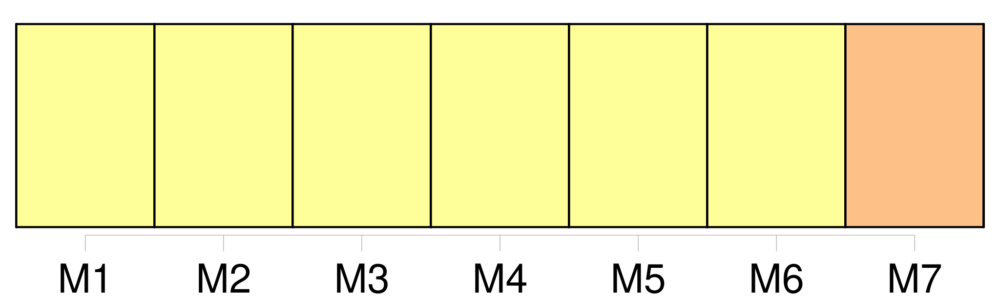
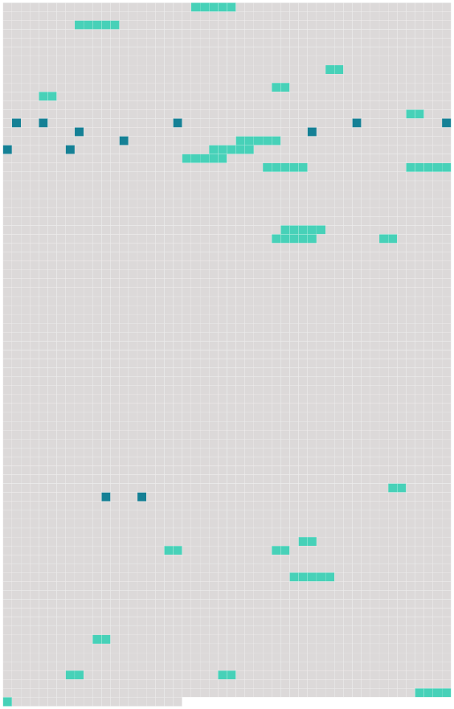

Longueur nb maillons : 35 mentions |
 |
CHAPITRE II [6 phrases]
[Le président de l'Institut] , le secrétaire général et un représentant des Communautés européennes participent sans droit de vote aux séances du conseil supérieur. [5 phrases]
Statuant à l'unanimité, le conseil supérieur [1 phrases]
Statuant à la majorité qualifiée, le conseil supérieur prend les décisions autres que celles prévues au paragraphe 5, notamment celles qui concernent : [6 phrases] [Le président] dirige l'Institut.
[Il] procède ou [veille] à l'exécution des actes et décisions pris en application de la convention et [prend] les décisions administratives qui ne relèvent pas de la compétence des autres organes de l'Institut. [1 phrases] [Il] est chargé de l'administration de l'Institut.
[Il] assure la représentation juridique de celui -ci.
[Il] établit le projet de budget annuel et le projet de prévisions financières triennales et les présente au conseil supérieur après consultation du conseil académique.
[Il] nomme les chefs de départements et les membres du corps enseignant, désignés par le conseil académique conformément à l'article 9 paragraphe 5 sous d ).
[Il] nomme les membres du personnel administratif de l'Institut. [1 phrases]
[Le président de l'Institut] est choisi par le conseil supérieur, sur une liste de trois noms proposés par le conseil académique. [Il] est nommé pour trois ans.
[Son] mandat peut être renouvelé une fois. [1 phrases]
Un secrétaire général assite [le président de l'Institut] dans ses tâches d'organisation et d'administration. [3 phrases]
Le secrétaire général et [le président de l'Institut] ne peuvent être de la même nationalité, sauf décision contraire prise à l'unanimité par le conseil supérieur. [2 phrases]
Il est présidé par [le président de l'Institut] [1 phrases]
Sont membres du conseil académique : [5 phrases]
Le conseil académique [3 phrases] Un bureau du conseil académique, présidé par [le président de l'Institut] , assisté du secrétaire général et composé [du président] et des chefs de départements, exerce les tâches particulières qui lui sont confiées par le conseil académique. [74 phrases] [Le président] exécute le budget conformément aux dispositions réglementaires financières et dans la limite des crédits alloués.
[Il] rend compte de [sa] gestion au conseil supérieur. [10 phrases]
[Le président] fournit tout renseignement et toute assistance dont les vérificateurs peuvent avoir besoin dans l'exercice de leurs fonctions. [1 phrases]
Les dispositions réglementaires financières déterminent les conditions dans lesquelles décharge est donnée [au président] sur l'exécution du budget. [1 phrases]
[Le président] établit un projet de previsions financières triennales et, après consultation du conseil académique, les soumet au conseil supérieur pour examen et appréciation. [8 phrases]
Le conseil supérieur, statuant à l'unanimité sur proposition [du président de l'Institut] ou de l'un des membres du conseil supérieur, arrête les dispositions réglementaires financières spécifiant notamment : [11 phrases]
Il peut notamment acquérir ou aliéner des biens immobiliers ou mobiliers, conclure des contrats et ester en justice ; à cet effet, il est représenté par [son président] [9 phrases]
Le Conseil académique peut valablement délibérer dès qu'il est composé [du président] , du secrétaire général et de ces huit enseignants.
Article 31 [4 phrases]
Article 33 |
 |
Il est possible de télécharger la ressource sur la page Ortolang |
Si vous avez des questions ou vous voyez des erreurs, merci d'envoyer un mail à silvia.federzoni89@gmail.com |